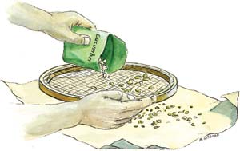

Savvy Seed Care
Proper storage and a little organization will produce a more successful garden.
By Barbara Pleasant
December 2006/January 2007
One of the best ways to escape the winter blahs is to let your thoughts wander into next year’s garden. Imagine your frozen soil thawed into glistening loam where robins pluck up earthworms. Then put yourself in the picture, poking fat pea seeds into the ground, or patting compost over a newly sown bed of lettuce.
Come to think of it, where are your seeds? No doubt they are resting somewhere; after all, seeds are plants enjoying their ultimate state of dormancy. But are they in a comfortable place, protected from heat, humidity and strong light? Did you put them in order before you forgot about them last fall? Maybe you should check on them, and take the first step toward actualizing your garden fantasies by tending to the needs of sleeping beans or tiny onion seeds.
Seeds deserve good care - a diverse collection is valuable property, both financially and personally. Should an enterprising mouse enjoy a midnight snack of the heirloom mahogany marigolds passed down from your great-grandmother, no amount of money could replace them. There’s no better time than now to organize your seed collection into secure containers.
First Sort Your Seeds
Begin by setting aside seeds you collected last summer, which are probably floating around in a multitude of paper or plastic bags (we’ll get to those in a minute). Then divide the rest into categories that reflect each plant’s place in the garden. For example, you might start with three piles - veggies, herbs and flowers - and then divide each of those piles into cool-season and warm-season groups. As you sort, look at the packets and check them for dates. Toss seeds that are too old to germinate well, or those that you tried and didn’t like. Use the “How Long Will Seeds Keep?” list to take some of the confusion out of this step.
If you have a lot of seeds, you may want to further sort them into plant groups such as beans, salad crops or cucurbits (members of the cucumber family). The main thing is to come up with a plan that suits your garden. Next, make lists of what’s in each pile so you won’t have to dig through your collection before you put together a seed order or get ready to plant (big index cards are great for this). Once you make your lists, use rubber bands to keep seed packets together by category. I keep these lists - along with recent seed order invoices - in a file folder taped to the lid of my storage box.
Seed Storage Strategies
Seeds store best when they are kept cool, dry and dark. Address the dryness issue first by finding an airtight container that will protect your seeds from changes in humidity. Glass jars with tight-fitting lids work well, or you can use a plastic storage bin with a tight-fitting, snap-on lid. Or, do both! After enduring years of disarray, I found that a plastic storage bin, outfitted with homemade cardboard partitions, is perfect for my needs. The partitions keep veggie, herb and flower seeds separate, plus there’s a fourth section for supplies. (See Seven Seed Box Tips.)
Carole B. Turner, author of Seed Sowing and Saving, emphasizes that seeds, being very much alive, do best when storage conditions are consistent. Fluctuations in temperature and moisture can cause the resting embryos inside the seeds to start growing and then stop again; with each surge and lull, the embryo may use up stored food meant to support germination.
The best place in my house to keep seeds is the basement, where winter temperatures hover around 60 degrees and summer temperatures rarely go above 75 degrees. To decide if your basement or another room will work to store seeds, consider the temperature and humidity levels. Combined, they should not equal more than 100. For example, since my storage temperatures are moderate (60 degrees to 75 degrees) I should try to keep humidity low (40 percent to 25 percent): Sixty degree temperature plus 40 percent humidity equals 100.
If I open the seed box often in damp weather, I place a container of silica gel (sold as closet dehumidifiers at department stores) in the box for a day or two.
If you can’t avoid fluctuating temperature or humidity levels at home, consider storing your seed box where you work, if it is air conditioned. Or you can refrigerate or freeze your seeds in airtight containers. Just be sure seeds are thoroughly dry before you freeze them; seeds that are not completely dry or have been exposed to high humidity levels can expand and burst when placed in a freezer. In humid summer weather, place seeds you plan to freeze in an airtight container with a packet of silica gel for two days before you freeze them. In winter, when indoor humidity levels are usually very low, air drying seeds for a day or two before freezing them is usually sufficient.
Some people freeze all of their seeds, but unless you need to extend their normal life span, this may be a waste of energy. If you do refrigerate or freeze your seeds, be sure to allow the containers to reach room temperature before you open them - a step that keeps condensation from forming inside the containers, which the dry seeds will absorb as excess moisture.
Cleaning Home-Grown Seeds
When I tidy up my seed box in winter, I always encounter crumpled paper bags containing seeds I’ve saved from the garden that need cleaning - a fine agenda for a long, cold evening.
You can make or buy framed seed-sifting screens that have holes of various shapes and diameters, or you can try my homemade version that consists of embroidery hoops - purchased at a thrift store for 50 cents each - and several pieces of nylon net and tulle, which you can get at a fabric shop for less than a dollar. Stackable, washable and easy to store right in my seed box, the hoop screens make it possible to separate seeds from chaff quickly by placing a coarse, quarter-inch mesh nylon screen over a finer screen outfitted with one-eighth-inch tulle. (See illustration.) To accommodate small or oddly shaped seeds, it’s easy to double up with either fabric.
Next comes a crucial task - sorting through the collected seeds to remove the small and the weak. Just as pulling up slow or spindly seedlings while thinning a row favors the most vigorous plants, a second round of selection for the most robust seeds can make a huge difference in the quality of the next season’s crop. With large seeds you can do this visually, by picking out any seeds that are small, discolored or broken. But with smaller seeds, you will get faster results by placing them in a clear drinking glass or jar with a half cup or so of water. Swirl the seeds and water for 30 seconds, then pour off the excess water along with any floaters - weak seeds will float because of poorly filled embryos or damage from feeding insects. (See illustration.) Dump the heavy seeds from the bottom of the glass onto a drying screen, paper towel or, in the case of seeds that develop a sticky coating when wet (as most mustard family plants do), a baking pan with a nonstick coating. Let the seeds dry for a day or two before packing them up and storing them in paper envelopes, pill bottles or airtight glass jars. Label and date each seed container.
Seed Swapping Suggestions
Putting your seed box in order may take a few hours, but one immediate payoff is discovering that you need to get more seeds! There’s plenty of time to buy them through a mail-order company (where you are more likely to get high-quality seeds than from racks in stores), or you can swap seeds with other gardeners. Either way, you’ll want to balance various variety-related characteristics such as flavor, color, nutrition, weather readiness, disease resistance and productivity. We try to help with those decisions by suggesting outstanding varieties in every gardening article we publish, but you should not deny yourself the pleasure of drooling over the pages of your favorite seed catalogs.
Perhaps this will be the year you commit to helping preserve worthy heirloom varieties, or maybe you’re ready to start selecting and saving seeds from your favorite open-pollinated crops. Either process will go faster and be more fun if you network with an organization such as the Seed Savers Exchange. You also may be able to find a group based in your region. For example, the University of Georgia now hosts the Southern Seed Legacy program, which helps members share seeds of nearly 500 Southern heirloom varieties. Dozens of master gardener associations in the United States sponsor local seed swaps once or twice a year. In Canada, Seeds of Diversity sponsors more than 40 Seedy Saturday events that always include swapping opportunities. If you’re new to saving seeds, start with a crop that’s easy to grow in your climate, because excellent growing conditions contribute to the production of bigger, better seeds. For more about saving seeds, read “Grow Your Own Seeds” (October/November 2003).
Your seeds need you to keep them safe and strong. Soon, the day will arrive when they’ll need you to do other things they cannot manage on their own, such as getting from your seed box to that cushy seed bed you’ve been dreaming about. Such partnerships between people and seeds have been going on for millennia, with each side serving the other to create a more productive and beautiful planet. Right now it’s your turn to act.
Seven Seed Box Tips
Gather up your seeds and get organized by using a storage box big enough to house your entire collection. Then consider these ideas and interior features:
- Install partitions, or use separate small boxes for various groups of seeds.
- Sort packets into categories, and keep like seeds together with rubber bands.
- Make color-coded paper packets from envelopes; here, green is used for veggies, yellow for flowers and lavender for herbs.
- Embroidery hoops outfitted with cloth netting make seed cleaning fast and easy.
- Store bulky seeds in small glass jars or pill bottles (baby food jars work great).
- Packets of silica gel can serve as desiccants.
- Make a written inventory of what you have, then stash your records in an envelope attached to the lid.
When to Skip Seeds and Buy Transplants
Some say it started with celery in the late 1970s. As the cost of hybrid seed increased, commercial growers in California found they could save time, money and water by transplanting seedlings rather than sowing seeds. Meanwhile, small-scale greenhouse growers in Ohio and Pennsylvania tapped into an exploding consumer demand for ready-to-plant flower seedlings, and Canadian government agencies mobilized to get their fledgling greenhouse industry off the ground.
It worked. By the 1990s, gardeners everywhere embraced the instant results they could get with bedding plants, and vegetables began to earn shelf space alongside petunias and begonias. Twenty years ago, you could buy tomatoes, peppers, cabbage and onions as seedlings, but industry experts assumed gardeners would not spend a dollar for a zucchini plant when they could get 20 times as many plants by sowing a packet of seeds. They were wrong. The majority of today’s gardeners don’t think twice about loading their trunks with container-grown cucumbers or cantaloupes, and there is even some horticultural research to support the plants-not-seeds approach.
Certainly there are risks involved. Transplanting can injure or traumatize roots, and plants that throw down delicate taproots as soon as they sprout (carrots and dill, for example) are difficult to handle as seedlings. With eager-beaver seedlings such as beans, squash and corn, messing with seedlings is worthwhile only if you’re growing a tightly managed intensive garden. It just makes sense to bypass containers, potting mix, grow lights and damping off worries by waiting for the right time to sow fast-growing peas, beans and beets, and difficult transplanters, such as dill and carrots, right in the garden.
With tomatoes, peppers and other slow-growing crops you do want to plant out as seedlings, there is a strong case for growing your own. You will have a huge selection of varieties to choose from, you’ll save lots of money, and you won’t be disappointed with poor performance from stressed-out seedlings that have been sitting on shelves weeks after they should have been put into the ground. You will enjoy the late winter companionship of your seedlings as they bask in the glow of a fluorescent light, and you’ll escape the mass-market loop dominated by seedlings raised on chemical diets in fumigated greenhouses. Besides, growing your own seedlings is just plain fun. The article Seed Starting Basics (December/January 2006) will walk you through the process.
How Long Will Seeds Keep?
When stored in a cool, dark place with constant low humidity, vegetable seeds typically remain viable for one to 10 years, depending on species. Freezing can triple the storage potential of most seeds, but this list reflects average seed longevity under good but non-frozen conditions.
1 to 2 YEARS
- corn
- leeks
- okra
- onions
- parsley
- peppers
3 to 4 YEARS
- beans
- beets
- carrots
- chard
- lettuce
- peas
- squash
- spinach
4 YEARS OR MORE
- broccoli
- Brussels sprouts
- cabbage
- cantaloupe
- cauliflower
- celery
- Chinese cabbage
- cucumber
- eggplant
- kale
- kohlrabi
- pumpkin
- radish
- tomato
- turnip
- watermelon
|
MICHAEL OTTEMAN Taking the time to organize your garden seeds during the winter will be an inspiration for spring planting. |
 MICHAEL OTTEMAN Use a screen to eliminate the dry leaves, stems and chaff from your dried seeds. |
 MICHAEL OTTEMAN Select your strongest seeds by swirling them in a little water and throwing away any that float. |
|
MICHAEL OTTEMAN A plastic box with a tight-fitting lid makes a good seed storage box. |
|
|